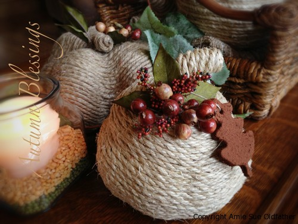

Cinnamon Ornaments (NOT edible)

I found this recipe originally on Martha Stewart’s site. She used Elmer’s glue in her’s, but I wanted to make these “safe.” They look edible, they smell edible, but they are not edible. But just in case a little one should get their hands on them and take a nibble… chances are they will wrinkle their nose and run far far away… but I didn’t want the ornament to be toxic just in case!
These ornaments can be used in various ways; hang on a Christmas tree, a plant, decorate a gift package with them, scatter around on the table, hang from your review mirror as a deodorizer, slip them in your sock drawer, so your feet smell all holiday-ish… lol
When I made my batch, I made them to late in the evening which meant that they weren’t done baking and I wanted to go to bed.. so I transferred them to my dehydrator and dried them all night with the temp set at 145 degrees. Two things… I woke up to the house smelling like a Ginger Bread House (can’t complain there) and they came out perfect. So, keep that in mind if you get in the same situation as I or if you would just rather use your dehydrator and not run your stove. You can’t over dry them in the dehydrator so you can leave it running all day or night. Just an option… I love options. :)
Items Needed:
- 1 cup of applesauce
- 1 1/2 cups cinnamon
- 2 Tbsp ground cloves
- cookie cutters
- string for hanging
Preparation:
- Preheat the oven to 200 degrees (F). Line 2 cookie sheets with parchment paper and set aside.
- In a large-sized mixing bowl combine the applesauce with the cinnamon. The best tool that you will find in the kitchen to mix this together is your hands!
- If the batter is too wet add more cinnamon, too dry add more applesauce. You will find the right balance. You don’t want it too wet to where it is sticking to your hands. If it is too dry, it will be full of cracks when trying to roll it out.
- Spread some additional cinnamon on the counter and roll out the dough to 1/4″ thick.
- Use the cookie cutters to cut out the shapes.
- Place the cutout shapes onto the cookie sheets. Using a skewer stick carefully make a hole through each cutout.
- Bake in the oven for an hour or more. The liquid in the applesauce needs to evaporate. The length of bake time depends on your house, humidity, and climate.
- Once done they should be rock hard, if not, continue baking till thoroughly dried out.
- After thoroughly cooled, loop a string through each of the holes.
Great to use to spruce up a gift!
© AmieSue.com